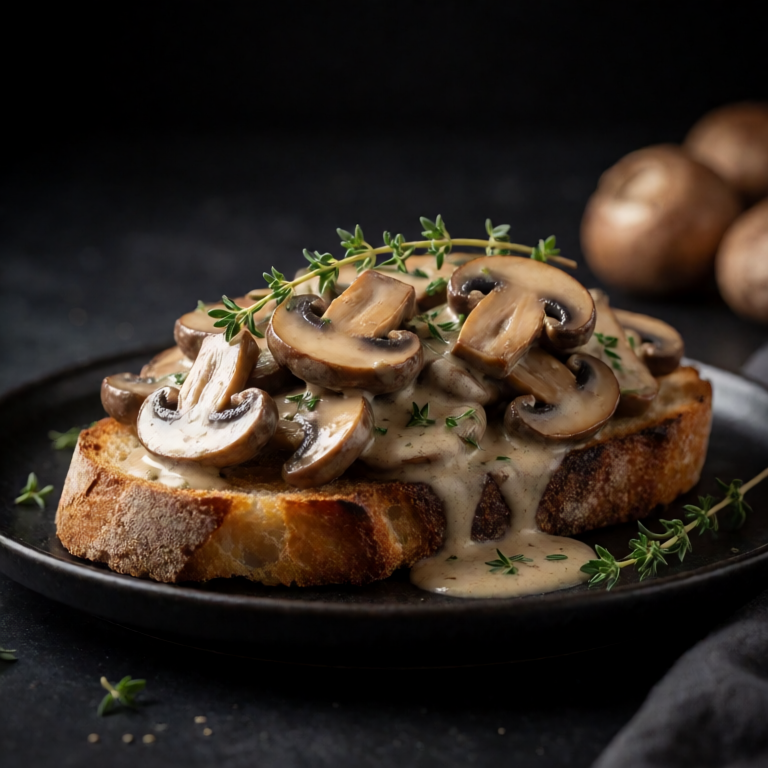
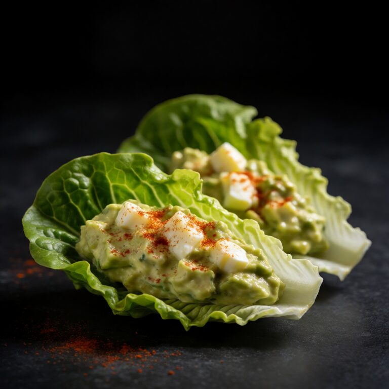
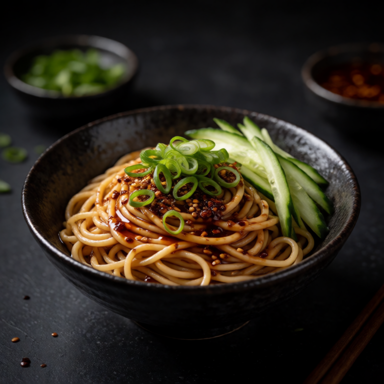

Low effort, high satisfaction
Girl Dinner Ideas
Girl dinner can be a snack plate, excellent toast, a bowl of something comforting, or whatever makes feeding yourself feel possible. The best version has contrast, enough food to satisfy you, and no need to justify itself.
40 recipes in this collection








A better starting point
What makes a good girl dinner?
- Start with what you genuinely want to eat, not what a complete dinner is supposed to look like.
- Mix textures and temperatures so the plate stays interesting from the first bite to the last.
- A loose collection of food still benefits from seasoning, a squeeze of lemon, or something pickled.